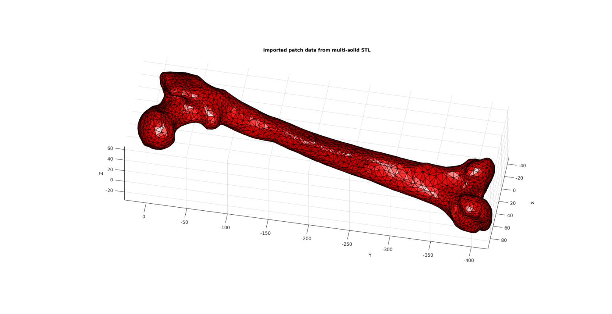
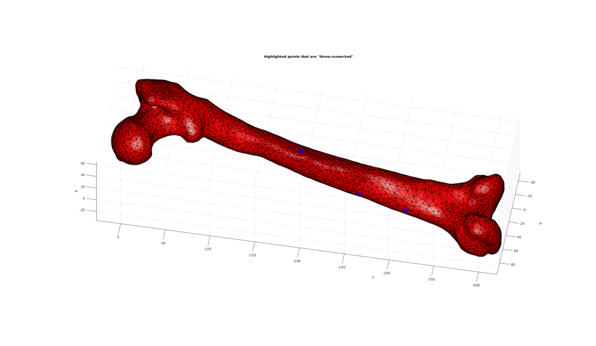
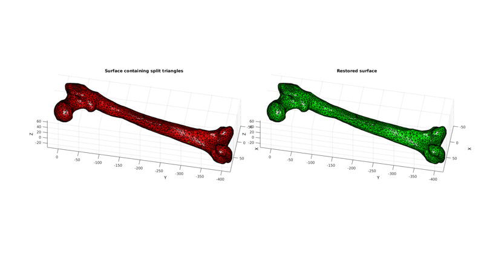
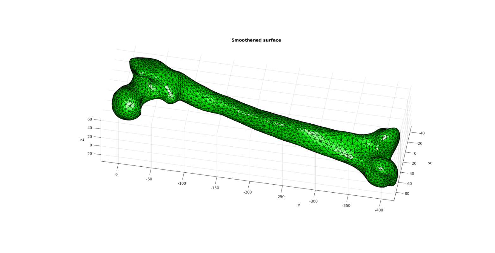
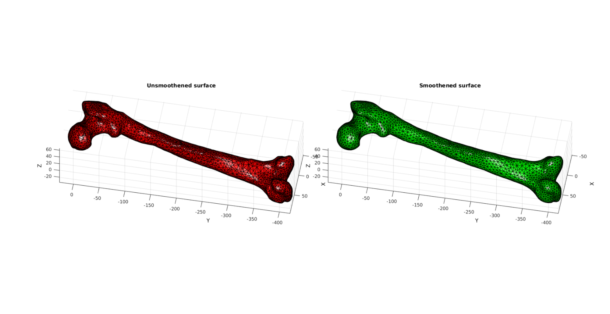
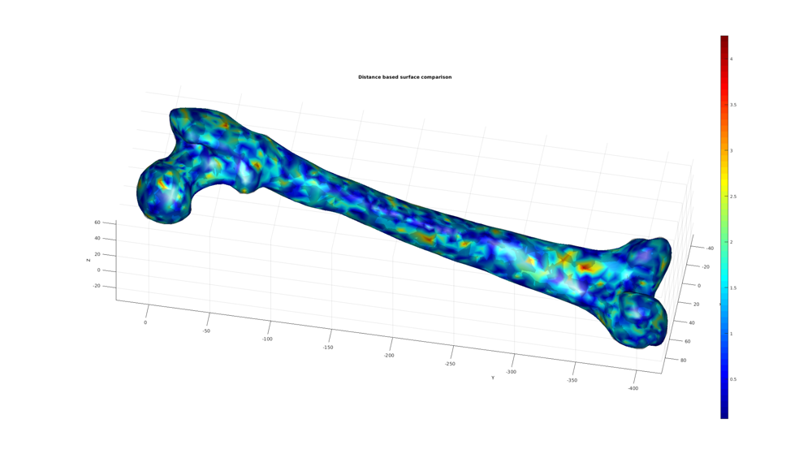

DEMO_femur_STL_surface_improvement.m
Below is a demonstration on the improvement of imported surface triangulations based on smoothening and the triSurfRemoveThreeConnect function. See also: triSurfRemoveThreeConnect and HELP_triSurfRemoveThreeConnect
Contents
clear; close all; clc;
Plot settings
fontSize=10; faceColor1='r'; faceColor2='g'; faceAlpha1=1; faceAlpha2=0.25; edgeColor=0*ones(1,3); edgeWidth=0.5; markerSize=50; viewAz=-100; vieEl=-50;
Importing STL surface triangulation
% Set folder and file name defaultFolder = fileparts(fileparts(mfilename('fullpath'))); pathName=fullfile(defaultFolder,'data','STL'); fileName=fullfile(pathName,'femur.stl'); % Import STL [stlStruct] = import_STL_txt(fileName);
Visualizing imported surface mesh
Plotting the model
cFigure; title('Imported patch data from multi-solid STL','fontSize',fontSize); xlabel('X','fontSize',fontSize);ylabel('Y','fontSize',fontSize); zlabel('Z','fontSize',fontSize); hold on; for q=1:1:numel(stlStruct.solidNames) F=stlStruct.solidFaces{q}; V=stlStruct.solidVertices{q}; V=V*1000; % Convert to mm for this particular surface patch('Faces',F,'Vertices',V,'FaceColor',faceColor1,'EdgeColor','k','FaceAlpha',faceAlpha1); end view(3); axis equal; axis tight; axis vis3d; grid on; view(viewAz,vieEl); camlight('headlight'); lighting phong; drawnow;
Merging nodes
STL imported surfaces suffer from non-unique points since each face is defined with its own coordinate set, even if it shares nodes with an adjacent face. Hence in order to generate a closed surface these nodes need to be merged. Here the unique function is used combined with pround to achieve this. So effectively points are deemed the same if they are the same after rounding to the 5th decimal place.
[~,ind1,ind2]=unique(pround(V,5),'rows');
V=V(ind1,:);
F=ind2(F);
Search for "three-connected" points
A common issue in triangulated surfaces are "three-connected" nodes. These may be undesirable and can easily be identified and removed.
[N]=numConnect(F,V); logicThree=N==3;
Plotting three connected points (some may be boundary points)
cFigure; title('Highlighted points that are "three-connected"','fontSize',fontSize); xlabel('X','fontSize',fontSize);ylabel('Y','fontSize',fontSize); zlabel('Z','fontSize',fontSize); hold on; patch('Faces',F,'Vertices',V,'FaceColor',faceColor1,'EdgeColor','k','FaceAlpha',faceAlpha1); plotV(V(logicThree,:),'b.','MarkerSize',markerSize); view(3); axis equal; axis tight; axis vis3d; grid on; view(viewAz,vieEl); camlight('headlight'); lighting phong; drawnow;
Removing "3-connected" vertices in the middle of faces and replacing associated faces by a single face
In a surface triangulation "3-connected" locations often contain poor quality triangles of a locally smaller area then the rest of the surface. Smoothening does not resolve this issue since the quality is not great improved even after vertex is at the centre of its neighbouring nodes. Hence the function triSurfRemoveThreeConnect instead removes the central nodes and groups the affected triangles into a single triangle.
[Ft,Vt,~,L]=triSurfRemoveThreeConnect(F,V,[]); C=double(L);
Plotting results
hf=cFigure; hold on; subplot(1,2,1); title('Surface containing split triangles','FontSize',fontSize); xlabel('X','FontSize',fontSize); ylabel('Y','FontSize',fontSize); zlabel('Z','FontSize',fontSize); hp=patch('Faces',F,'Vertices',V,'FaceColor','flat','CData',C,'FaceAlpha',faceAlpha1,'lineWidth',edgeWidth,'edgeColor',edgeColor); set(gca,'FontSize',fontSize); view(3); axis tight; axis equal; axis vis3d; grid on; view(viewAz,vieEl); colormap autumn; camlight('headlight'); lighting flat; subplot(1,2,2); title('Restored surface','FontSize',fontSize); xlabel('X','FontSize',fontSize); ylabel('Y','FontSize',fontSize); zlabel('Z','FontSize',fontSize); hp=patch('Faces',Ft,'Vertices',Vt,'FaceColor',faceColor2,'FaceAlpha',faceAlpha1,'lineWidth',edgeWidth,'edgeColor',edgeColor); % [hp]=patchNormPlot(Ft,Vt,0.25); set(gca,'FontSize',fontSize); view(3); axis tight; axis equal; axis vis3d; grid on; view(viewAz,vieEl); colormap autumn; camlight('headlight'); lighting flat; drawnow;
Surface smoothening
cPar.n=25;
cPar.Method='HC';
[Vt]=patchSmooth(Ft,Vt,[],cPar);
Plotting smoothing results
hf=cFigure; hold on; subplot(1,2,1); title('Unsmoothened surface','FontSize',fontSize); xlabel('X','FontSize',fontSize); ylabel('Y','FontSize',fontSize); zlabel('Z','FontSize',fontSize); hp=patch('Faces',F,'Vertices',V,'FaceColor',faceColor1,'FaceAlpha',faceAlpha1,'lineWidth',edgeWidth,'edgeColor',edgeColor); set(gca,'FontSize',fontSize); view(3); axis tight; axis equal; axis vis3d; grid on; view(viewAz,vieEl); colormap autumn; camlight('headlight'); lighting flat; subplot(1,2,2); title('Smoothened surface','FontSize',fontSize); xlabel('X','FontSize',fontSize); ylabel('Y','FontSize',fontSize); zlabel('Z','FontSize',fontSize); hp=patch('Faces',Ft,'Vertices',Vt,'FaceColor',faceColor2,'FaceAlpha',faceAlpha1,'lineWidth',edgeWidth,'edgeColor',edgeColor); set(gca,'FontSize',fontSize); view(3); axis tight; axis equal; axis vis3d; grid on; view(viewAz,vieEl); colormap autumn; camlight('headlight'); lighting flat; drawnow; hf=cFigure; hold on; title('Smoothened surface','FontSize',fontSize); xlabel('X','FontSize',fontSize); ylabel('Y','FontSize',fontSize); zlabel('Z','FontSize',fontSize); hp=patch('Faces',Ft,'Vertices',Vt,'FaceColor',faceColor2,'FaceAlpha',faceAlpha1,'lineWidth',edgeWidth,'edgeColor',edgeColor); set(gca,'FontSize',fontSize); view(3); axis tight; axis equal; axis vis3d; grid on; view(viewAz,vieEl); colormap autumn; camlight('headlight'); lighting flat; drawnow; 
Compare surface sets
Compute a surface distance metric
[D]=minDist(Vt,V);
Plot results
cFigure; title('Distance based surface comparison','fontSize',fontSize); xlabel('X','fontSize',fontSize);ylabel('Y','fontSize',fontSize); zlabel('Z','fontSize',fontSize); hold on; patch('Faces',Ft,'Vertices',Vt,'FaceColor','flat','CData',D,'EdgeColor','none','FaceAlpha',faceAlpha1); colormap jet; colorbar; shading interp; patch('Faces',F,'Vertices',V,'FaceColor','k','EdgeColor','none','FaceAlpha',faceAlpha2); view(3); axis equal; axis tight; axis vis3d; grid on; view(viewAz,vieEl); camlight('headlight'); lighting phong; drawnow;

GIBBON www.gibboncode.org
Kevin Mattheus Moerman, gibbon.toolbox@gmail.com
GIBBON footer text
License: https://github.com/gibbonCode/GIBBON/blob/master/LICENSE
GIBBON: The Geometry and Image-based Bioengineering add-On. A toolbox for image segmentation, image-based modeling, meshing, and finite element analysis.
Copyright (C) 2017 Kevin Mattheus Moerman
This program is free software: you can redistribute it and/or modify it under the terms of the GNU General Public License as published by the Free Software Foundation, either version 3 of the License, or (at your option) any later version.
This program is distributed in the hope that it will be useful, but WITHOUT ANY WARRANTY; without even the implied warranty of MERCHANTABILITY or FITNESS FOR A PARTICULAR PURPOSE. See the GNU General Public License for more details.
You should have received a copy of the GNU General Public License along with this program. If not, see http://www.gnu.org/licenses/.